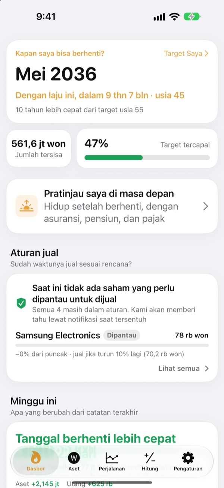
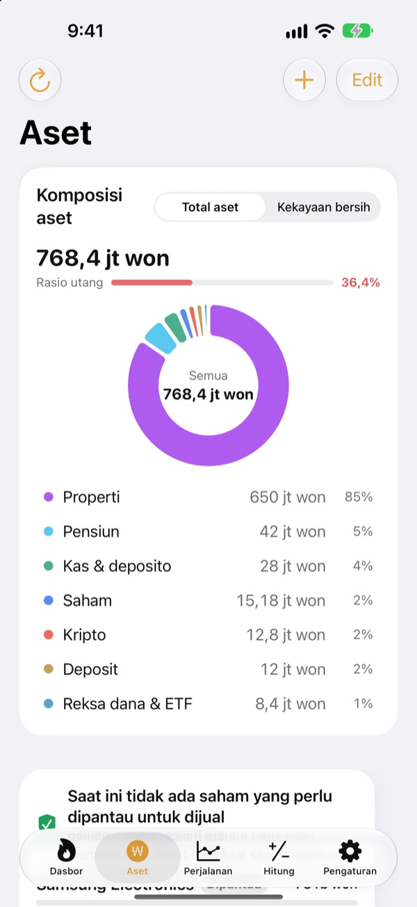
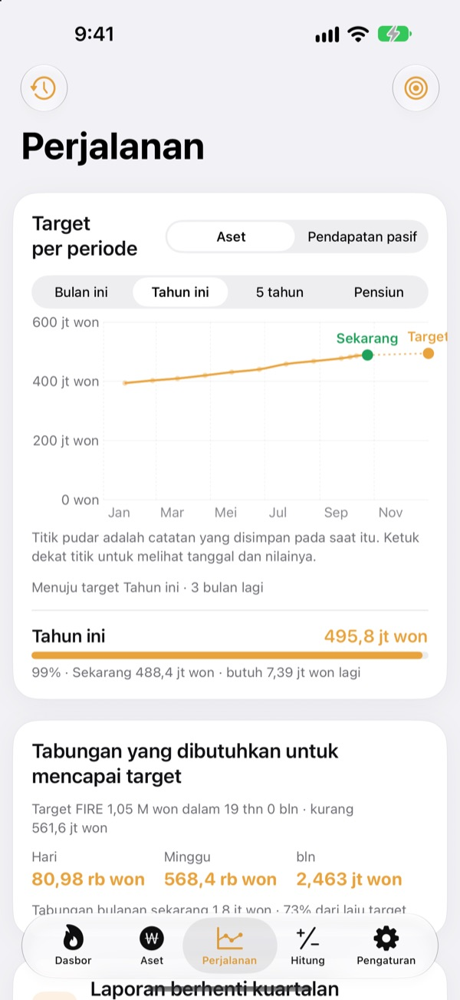
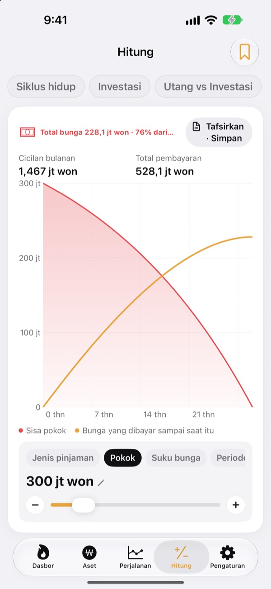

Kapan bisa berhenti kerja?
Lihat angkanya.
Masukkan pengeluaran dan tabungan Anda, lalu muncul bulan saat Anda bisa berhenti kerja. Setiap kali aset berubah, Anda langsung tahu apakah tanggal itu makin dekat atau makin jauh.
Tanpa akun. Catatan Anda tetap di perangkat.

Hitung tanggal berhenti kerja Anda
Geser slidernya. Hitungannya sama dengan layar pertama di app.
Masih menghitung "sudah bisa berhenti belum?" di kepala?
Kalau rekening bank, akun saham, dana pensiun, dan uang jaminan sewa tersebar di mana-mana, totalnya saja sudah kabur, apalagi tanggal berhenti kerja. Toesagak mengumpulkan semuanya dalam satu layar dan terus menghitung ulang bulan Anda bisa berhenti dari total itu.
Semua aset di satu layar
Properti, saham, reksa dana dan ETF, pensiun, tunai dan deposito, uang jaminan sewa, kripto, hingga pinjaman, dikelompokkan menurut jenis lengkap dengan total aset, kekayaan bersih, dan rasio utang.
Harga saham dan kripto diambil agar nilainya selalu terbaru, dan tangkapan layar dari app sekuritas langsung memasukkan kepemilikan beserta nilainya sekaligus.

Berapa per hari untuk sampai ke sana
Lihat bulan ini, tahun ini, lima tahun, dan pensiun sebagai target, bersama catatan sebelumnya, dalam satu grafik. App juga memberi tahu berapa yang perlu ditabung per hari, minggu, atau bulan agar tetap di jalur.
Saat aset berubah, catatan minggu itu tersimpan otomatis, jadi riwayat Anda terbentuk sendiri.

Hitung dulu sebelum keputusan besar
Kalkulator untuk kurva aset sepanjang hidup, investasi, lunasi utang atau investasi, pinjaman, tabungan dan deposito, daya beli gaji, serta mengubah uang menjadi jam kerja. Geser nilainya dan grafik langsung digambar ulang, dengan kurva sebelumnya tetap tampil sebagai garis putus-putus untuk dibandingkan.
Beri nama dan simpan skenario yang sering Anda buka lagi.

Mulai dalam tiga langkah
- 1
Masukkan pengeluaran dan usia
Angka kira-kira sudah cukup. Tanggal berhenti kerja langsung muncul.
- 2
Tambahkan aset Anda
Makin rinci, makin tepat tanggalnya.
- 3
Cek sesekali
Catatan mingguan terkumpul sendiri, dan app bisa mengingatkan Anda setiap tanggal 1.
Cara app menghitung
- Target
- Pengeluaran setahun setelah berhenti ÷ laju penarikan aman (pada 4%, setara pengeluaran 25 tahun)
- Tanggal berhenti
- Bulan saat kekayaan bersih ditambah tabungan bulanan, yang tumbuh sesuai imbal hasil yang diharapkan, mencapai target
- Total aset
- Semua yang Anda miliki, dijumlahkan
- Kekayaan bersih
- Total aset dikurangi utang seperti pinjaman
- Progres
- Kekayaan bersih ÷ target. Bisa juga dipantau lewat pendapatan pasif
- Yang bisa diubah
- Pengeluaran bulanan, laju penarikan 2–6%, imbal hasil yang diharapkan 0–12%, usia saat ingin berhenti
Semua hasil adalah perhitungan acuan berdasarkan masukan Anda dan bukan saran investasi.
Pertanyaan
Di mana catatan saya disimpan?
Hanya di perangkat Anda. Tidak ada pendaftaran dan tidak ada yang dikirim ke pengembang. Aktifkan Sinkronisasi iCloud di Pengaturan untuk melihat catatan yang sama di iPhone dan iPad lewat akun iCloud Anda sendiri.
Harga tidak diperbarui.
Saham AS dan Korea, kripto, dan kurs mata uang langsung berfungsi tanpa pengaturan. Periksa koneksi internet dan pastikan ticker atau kodenya benar. Harga apartemen memakai data properti publik Korea dan butuh kunci layanan gratis yang dimasukkan di Pengaturan.
Apa beda total aset dan kekayaan bersih?
Total aset adalah semua yang Anda miliki, dijumlahkan. Kekayaan bersih adalah total itu dikurangi utang seperti pinjaman. Tanggal berhenti kerja dihitung dari kekayaan bersih.
Bagaimana memindahkan catatan ke perangkat baru?
Pakai Ekspor di Pengaturan untuk membuat file cadangan, simpan di Files, iCloud Drive, atau email, lalu pulihkan di perangkat baru. File cadangan tidak pernah berisi kunci API. App juga otomatis menyimpan 20 cadangan terbaru di perangkat.
Bagaimana cara kerja peringatan jual?
Untuk tiap aset, atur seberapa jauh harganya boleh turun dari puncak, atau tetapkan harga target. Saat batas itu terlewati, Anda diberi tahu. Saat harga naik, app diam saja. Harga dicek ketika Anda membuka app dan ketika iOS mengizinkan di latar belakang (biasanya tiap beberapa jam), jadi ini bukan pemantauan real-time.
Bisakah angka saya tetap rahasia?
Aktifkan Kunci app di Pengaturan agar app dibuka dengan Face ID atau kode sandi. Saat kunci aktif, pengingat bulanan juga tidak menampilkan angka apa pun.
Bisakah saya lihat-lihat dulu?
Aktifkan Data demo di Pengaturan untuk menjelajahi semua layar dengan aset tokoh fiktif. Matikan lagi, dan catatan Anda langsung kembali. Data demo tidak tersedia saat Sinkronisasi iCloud aktif.
Bagaimana menghapus semua data saya?
Menghapus app akan menghapus semua catatan yang tersimpan di perangkat. Jika ingin menyimpan salinan, ekspor file cadangan di Pengaturan terlebih dulu.
Bisakah saya berinvestasi berdasarkan angka ini?
Hasil Toesagak adalah perhitungan acuan berdasarkan masukan Anda dan imbal hasil yang diasumsikan. Ini bukan saran investasi, dan hasil sebenarnya bergantung pada pasar dan situasi Anda.
Ada bug, ide, atau pertanyaan? Kirim email ke leeo@kakao.com.